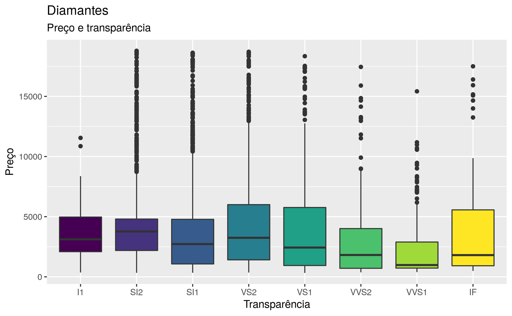

Este pacote disponibiliza a tradução de conjuntos de dados em inglês originalmente disponíveis em outros pacotes de R. Os dados traduzidos são utilizados nos exemplos do livro R for Data Science de Hadley Wickham & Garrett Grolemund, cuja versão em português foi publicada por AltaBooks & O’Reilly.
Instalação
O pacote dados atualmente está em desenvolvimento. Esta versão (em progresso) pode ser instalada a partir do GitHub:
# install.packages("remotes")
remotes::install_github("cienciadedatos/dados")Traduções
As traduções disponíveis dentro de dados são as seguintes:
| Nome | Título | Pacote | Dataset |
|---|---|---|---|
| casas | Dados de habitação em Ames | AmesHousing | ames_raw |
| bebes | Nomes de bebês | babynames | babynames |
| velho_fiel | Dados do gêiser Velho Fiel (Old Faithful) | datasets | faithful |
| dados_iris | Dados de espécies de flor de Íris por Edgar Anderson | datasets | iris |
| mtcarros | Testes de estrada para automóveis | datasets | mtcars |
| dados_starwars | Personagens de Starwars | dplyr | starwars |
| questionario | Amostra de variáveis categóricas do questinário ‘General Social Survey’ (GSS) | forcats | gss_cat |
| comuns | Modelos comuns de carros | fueleconomy | common |
| veiculos | Dados de economia de combustível | fueleconomy | vehicles |
| dados_gapminder | Dados de Gapminder | gapminder | gapminder |
| diamante | Preço de 50 mil diamantes | ggplot2 | diamonds |
| milhas | Dados de economia de combustível de 1999 a 2008 para 38 modelos populares de carros | ggplot2 | mpg |
| presidentes_eua | Período que engloba 11 presidentes, desde Eisenhower até Obama | ggplot2 | presidential |
| premios_gerentes | Tabela de prêmios dos gerentes | Lahman | AwardsManagers |
| rebatedores | Tabela de estatíticas de Beisebol | Lahman | Batting |
| jardineiros | Tabela de estatísticas do jardineiro | Lahman | Fielding |
| gerentes | Tabela de gerentes | Lahman | Managers |
| pessoas | Tabela de pessoas | Lahman | People |
| arremesadores | Tabela de estatísticas de arremesadores | Lahman | Pitching |
| salarios | Tabela de salários | Lahman | Salaries |
| dados_atmosfera | Dados atmosféricos | nasaweather | atmos |
| companhias_aereas | Nomes de companhias aéreas | nycflights13 | airlines |
| aeroportos | Aeroportos | nycflights13 | airports |
| voos | Dados de voos | nycflights13 | flights |
| avioes | Dados de aviões | nycflights13 | planes |
| clima | Dados de clima | nycflights13 | weather |
| pinguins | Medidas de pinguins adultos perto da Estação Palmer, Antártida (Palmer Station) | palmerpenguins | penguins |
| pixar_oscars | Filmes da Pixar com indicações ao Oscar | pixarfilms | academy |
| pixar_bilheteria | Bilheteria dos filmes da Pixar | pixarfilms | box_office |
| pixar_generos | Gêneros dos filmes da Pixar | pixarfilms | genres |
| pixar_filmes | Filmes da Pixar | pixarfilms | pixar_films |
| pixar_equipe | Equipe dos filmes | pixarfilms | pixar_people |
| pixar_avalicao_publico | Filmes da Pixar e avaliações | pixarfilms | public_response |
| tabela1 | Registros de tuberculose da Organização Mundial da Saúde (primeira variante) | tidyr | table1 |
| tabela2 | Registros de tuberculose da Organização Mundial da Saúde (segunda variante) | tidyr | table2 |
| tabela3 | Registros de tuberculose da Organização Mundial da Saúde (terceira variante) | tidyr | table3 |
| tabela4a | Registros de tuberculose da Organização Mundial da Saúde (variante 4a) | tidyr | table4a |
| tabela4b | Registros de tuberculose da Organização Mundial da Saúde (variante 4a) | tidyr | table4b |
| tabela5 | Registros de tuberculose da Organização Mundial da Saúde (quinta variante) | tidyr | table5 |
| dados_oms | Dados de tuberculose da Organização Mundial da Saúde | tidyr | who |
Uso
O pacote dados pode ser carregado como qualquer outro pacote de R:
Ao carregar o pacote, as variáveis que contêm os dados estarão disponíveis imediatamente para uso. Porém, os dados não serão traduzidos até que a variável seja “chamada” explicitamente por um comando. Neste exemplo, o conjunto de dados diamante, que provém de ggplot2::diamonds, é carregado no workspace do R no momento em que o chamamos pela primeira vez em português:
glimpse(diamante)
#> Rows: 53,940
#> Columns: 10
#> $ preco <int> 326, 326, 327, 334, 335, 336, 336, 337, 337, 338, 339, …
#> $ quilate <dbl> 0.23, 0.21, 0.23, 0.29, 0.31, 0.24, 0.24, 0.26, 0.22, 0…
#> $ corte <ord> Ideal, Premium, Bom, Premium, Bom, Muito Bom, Muito Bom…
#> $ cor <ord> E, E, E, I, J, J, I, H, E, H, J, J, F, J, E, E, I, J, J…
#> $ transparencia <ord> SI2, SI1, VS1, VS2, SI2, VVS2, VVS1, SI1, VS2, VS1, SI1…
#> $ profundidade <dbl> 61.5, 59.8, 56.9, 62.4, 63.3, 62.8, 62.3, 61.9, 65.1, 5…
#> $ tabela <dbl> 55, 61, 65, 58, 58, 57, 57, 55, 61, 61, 55, 56, 61, 54,…
#> $ x <dbl> 3.95, 3.89, 4.05, 4.20, 4.34, 3.94, 3.95, 4.07, 3.87, 4…
#> $ y <dbl> 3.98, 3.84, 4.07, 4.23, 4.35, 3.96, 3.98, 4.11, 3.78, 4…
#> $ z <dbl> 2.43, 2.31, 2.31, 2.63, 2.75, 2.48, 2.47, 2.53, 2.49, 2…Os dados traduzidos permanecerão carregados em sua sessão de R:
diamante %>%
filter(corte == "Bom") %>%
ggplot() +
geom_boxplot(aes(transparencia, preco, fill = transparencia)) +
theme(legend.position = "none") +
labs(title = "Diamantes", subtitle = "Preço e transparência", y = "Preço", x = "Transparência")
Funções internas de dados
As funções internas de dados foram desenvolvidas originalmente por seu pacote irmão: datos.